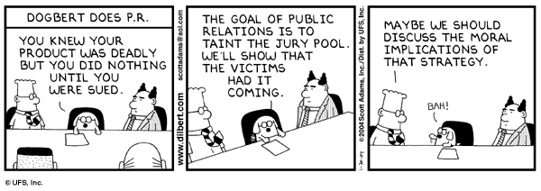

(Raymond's essay focuses on property and ownership customs of the open-source culture.)
Does Ridley's text support or refute Raymond's paper?
(You may include other supporting material from Raymond's The Cathedral and the Bazaar, and The Magic Cauldron.)
Cite those chapters in Ridley where material you use can be found. Similary, cite the sections and which essay for material from Raymond.
Term Paper:
Write a term paper on Open Source(F/OSS).Discuss benefits and liabilities.
Include emphases on:
- Definitions and distinctions (is it free software?)
- Motivations
- Origins and history: discuss some historical antecedants for open source both inside and outside the context of computing (e.g. math & science publication);
- Social context: open source is useful only in the context of a
social network.
Explore the synergy between open source and social networks.
Explore as well the implications for numerous contexts of application and analysis; - Methods & tools of analysis: Explain how open source can facilitate and improve processes of deliberation and information gathering in the service of ethical analysis; (Hint: Sunstein)
- Discuss open source in the context of two or more prominent ethical frameworks;
- Professional & ethical responsibilities: how does the open source process correlate to tenets of relevant codes of ethics?
- Risks (reduces or increases? how? for whom?);
- Privacy & civil liberties: Explain how open source can be applied to help protect privacy and other civil liberties in several contexts including cryptography and voting integrity;
- Computer crime: explore the application of open source to the commission, to the detection, and to the prevention of computer crime;
- Intellectual property
- describe licence issues, commonalities and differences, e.g. GNU (full and lesser), LaTeX, etc.
- describe copyright vs. trade secrets, SW patents, trademarks (what is fair use?)
- Economic issues w.r.t.
- programmers
- businesses
- consumers and society
- use value, market value, and monopoly value
- contrast the open source movement to the free software movement
- Open source alternatives to (lossy and lossless) proprietary media standards and formats, e.g.,
- sound files
- graphics files
- Recent open source issues with significant public exposure (lots of newsprint)
- Summary in context of ethics and ethical obligations
- The Cathedral and the Bazaar
- Homesteading the Noosphere
- The Magic Cauldron.)
- Infotopia: how many minds produce knowledge, Cass R. Sunstein, Oxford U. Press, 2006
Timely announcements:
- Caucus March 1, 2016
- MN GOP Caucus (see Resolution form Available link)
- MN DFL Caucus (see Resolution form Available link)
- EFF.org action items
- ACM US Public Policy Council
- CPSR Action Center
- Center for Democracy & Technology (CDT)
Lecture notes:
- counting & cognition,
- language & cognition,
- Sapir-Whorf hypothesis,
- Connections (TV series) - Wikipedia,
- How We Got To Now (TV series),
- Math history[.pdf], [.txt] [.ps],
- Ethics [.pdf],
Engineering Ethics [.pdf],
- Privacy [.ps], [.pdf],
- Intellectual Property I [.pdf],
Intellectual Property II [.pdf],
- risks[.pdf],
risks[.ps],
risks2[.pdf], risks2[.ps],
risks3[.pdf], risks3[.ps],
risks4[.pdf], risks4[.ps],
- Work & Wealth [.pdf], [.ps],
Textbook Websites:
- A Gift of Fire: Social, Legal, and Ethical Issues for Computing and the Internet, 4th Ed., Sara Baase, Prentice Hall, 2013
- The Origins of Virtue: Human Instincts and the Evolution of Cooperation, Matt Ridley, Penguin, 1998
- The Origins of Virtue - Wikipedia
- Infotopia: how many minds produce knowledge, Cass R. Sunstein, Oxford U. Press, 2008
- Cass Sunstein - Wikipedia
- Cass R. Sunstein (his homepage)
- Professor Cass R. Sunstein (his other (older?) homepage)
- Sunstein guest entries (search term: "Sunstein")
- The Origins of Virtue: Human Instincts and the Evolution of Cooperation, Matt Ridley, Penguin, 1998
Web based resources:
references:
- Jargon File, Eric Raymond - Wikipedia
- FOLDOC - Computing Dictionary
- Wikipedia, the free encyclopedia
- freshnews.org - fresh tech news from around the net
- FOLDOC - Computing Dictionary
civil:
Baase Chapter 1 (ubiquity):
- False positive - Wikipedia
Digital Libraries
- The Right to Read by Richard Stallman
- The Library of Congress
- CiteSeer: The NEC Research Institute Scientific Literature Digital Library
- Digital Libraries Initiative Phase 2
- UC Berkeley Digital Library Project
- New Zealand Digital Library
- Welcome to Project Gutenberg
- Computer Lib (Ted Nelson) - Wikipedia
Digital Crime Fighting
- CNN - FBI turns on new crime-fighting system - July 19, 1999
Digital Education
- AACE - Association for the Advancement of Computing in Education
- National Association of Advisers for Computers in Education
Digital Medicine
- Health Informatics World Wide
- What is Health Informatics?
- Structure-Based Drug Design: From the Computer to the Clinic
- SCIENCE & TECHNOLOGY - STRUCTURE-BASED DRUG DESIGN
- Medicine and the Computer: The Promise and Problems of Change - Mycin expert system
Digital Enablement
- Disabilities - Assistive Technology Top Links
- AT NETWORK - Assistive Technology Resources
- EdReform.Net | Digital Equity - Technology resources
- References on Web Accessibility
Digital Science
- Computational Science Education Project
- The new scientific revolution: Reproducibility at last - by Joel Achenbach, Washington Post
- The Right to Read by Richard Stallman
Computing History:
- History of numbers - Wikipedia
- History of Mathematics - Wikipedia
- History of Mathematics Web Sites
- History of computing hardware - Wikipedia
- History of computing hardware (1960s - present) - Wikipedia
- History of software - Wikipedia
- Software Industry Special Interest Group at the Computer History Museum
- Timeline of computing - Wikipedia
- List of pioneers in computer science - Wikipedia
- computer museum - Wikipedia
- Charles Babbage Institute
- The IEEE Global History Network
- History of Computing page at Virginia Tech
- OVERVIEWS OF THE HISTORY OF COMPUTING
- History of Computing - CompHist.org
- Computer Society: Timeline of Computing History (lots of photos)
- Computer History Museum
History of Women in Computing
- Women in computing timeline - Wikipedia
- Pioneering Women in Computing Technology - The Ada Project
- History's Female Programmers Will No Longer Be Forgotten: Remembering the pioneers - Selena Larson
- The Forgotten Female Programmers Who Created Modern Tech - National Public Radio
- When Women Stopped Coding - National Public Radio
sideroads:
- Connections (TV series) - Wikipedia
- Mayan Math
- The History of Pi by Petr Beckmann Effect of political/religious institutions on progress
- Lysenkoism - Wikipedia
- The Word Spy - steampunk
- William Gibson and Bruce Sterling: The Difference Engine
- Difference Engines
- Divided Differences
- Divided Differences - Wikipedia
- Method of finite differences - Wikipedia
- Introduction to the Slide Rule
- The Slide Rule [Computer History Museum]
- Slide Rules and the Making of the Modern World
- Slide rule - Wikipedia
- Interactive Virtual Slide Rule
- Calculating device links
- The Abacus: Index
- Napier's bones - Wikipedia
- Napier's bones (includes an interactive component)
- Curta calculator - Wikipedia
- HP-35 handheld scientific calculator, 1972 - HP
- History of the HP-35 Scientific Calculator hand-held scientific calculator
- HP-35 - Wikipedia
- Calculator watch - Wikipedia
- top 15 classic calculator watches
- Mayan Math
- PLATO system - Wikipedia
- Ternary computer - Wikipedia
- Xerox Alto - Wikipedia
- Altair 8800 - Wikipedia
- IBM PC - Wikipedia
- TRS 80 - Wikipedia
- Timex-Sinclair - Wikipedia
- Osborne 1 - Wikipedia
- ILLIAC IV - Wikipedia
- Connection Machine - Wikipedia
- Gopher (protocol) - Wikipedia
- NeWS (Network extensible Window System) - Wikipedia
- How the Telegraph Helped Lincoln Win the Civil War
- The Alan Turing Internet Scrapbook Computable Numbers, 1936 and the Turing Machine
- Turing’s Cathedral - Joel Achenbach
- What The Imitation Game didn’t tell you about Turing’s greatest triumph - Joel Achenbach
- Turing, Father of the Modern Computer
- Turing at NPL
- Turing Machine - Wikipedia
- Turing Machine - Stanford Encyclopedia of Philosophy
- Turing machine equivalents - Wikipedia
- Virtual Turing Machine (VTM)
- Automata theory - Wikipedia
- Chomsky hierarchy - Wikipedia
- Post-quantum cryptography - Wikipedia
- Von_Neumann probes - Wikipedia
- The Lorenz and the Colossus
- Konrad Zuse History Of Computing
- Konrad Zuse - Wikipedia
- Digital physics - Wikipedia
- A New Kind of Science by Wolfram - Wikipedia
- Open Directory - Computers: History: Pioneers: Zuse, Konrad
- Theory and Methodology of Programming Languages (Foundational sources)
- Timeline of programming languages - Wikipedia
- History of compiler construction - Wikipedia
- programming language relationship diagram collection
- The Origin of Programming Language Names
- The ALGOL Programming Language
- A Curriculum for Cybernetics and Systems Theory
- ASCII-EBCDIC
- List of educational programming languages - Wikipedia
- LOGO as a Programming Language for Educational Applications
- Mindstorms: Children, Computers, and Powerful Ideas - book by Seymour Papert - Wikipedia
- Seymour Papert - Wikipedia
- Marvin Minsky - Wikipedia
- John McCarthy - Wikipedia
- Seymour Papert - Wikipedia
- A Quick History of UNIX
- Origins and History of UNIX 1969 - 1995
- The Evolution of the Unix Time-sharing System
- The Development of the C Language
- A re-visiting and revising the famous Bushy Tree diagram of the lineage of visual interactive computing systems
- The origins of word processing from a rising WordStar
- WordStar - Wikipedia
- Heroes of Cyberspace: John Brunner
- Vernor Vinge, online prophet
- R.U.R. (Rossum's Universal Robots) - Karel Capek, 1920 - Wikipedia
- Metropolis (film) by Fritz Lang, 1927 - Wikipedia
- Internet Timeline
- Bulletin board system - Wikipedia
- Usenet - Wikipedia
- WWW: history - Wikipedia
- Webgraph - Wikipedia
- Internet of Things - Wikipedia
- Web of Things - Wikipedia
- Web 2.0 - Wikipedia
- Unstructured data - Wikipedia
- Metadata - Wikipedia
- Semantic Web - Wikipedia
- Data mining - Wikipedia
- Big data - Wikipedia
- Visualization - Wikipedia
- The Living Internet
- PBS: A Brief History of the Internet
- PBS: Triumph of the Nerds
- 2001: HAL's Legacy - IMDB
- HAL's Legacy: 2001's Computer as Dream and Reality - Book
- Hypertext - Wikipedia
- From Gutenberg's Galaxy to Cyberspace: The Transforming Power of Electronic Hypertext
- Memex - Wikipedia
- NLS (computer system) - Wikipedia
- Project Xanadu - Wikipedia
- Hyperstructure: Computers built around things that you care about
- Fenfire project
- Fentwine: A navigational RDF browser and editor
- MYCIN - Wikipedia
- Gopher (protocol) - Wikipedia
- Search engine: history - Wikipedia
- PageRank - Wikipedia
- The Anotomy of a Search Engine - Sergey Brin & Lawrence Page: Stanford U. (PDF)
- The Internet Archive Wayback Machine
- WebCite
- Hacker
- The Origin of "Hacker"
- Cultural histories of the computer: The Closed World, From Counterculture to Cyberculture, and The Net Effect
- From Counterculture to Cyberculture
- Asimov's Three Laws of Robotics - Wikipedia
- Achieving Artificial Intelligence Through Building Robots by R. A. Brooks
- From Earwigs to Humans by R. A. Brooks
- The relationship between matter and life by R. A. Brooks
- Extraordinary Popular Delusions And the Madness of Crowds - Wikipedia
- Tulip Mania - Wikipedia
- Gödel, Escher, Bach by D. Hofstadter - Wikipedia
- Links related to the book Gödel, Escher, Bach by D. Hofstadter
- Gödel's Incompleteness Theorem
- Then Now - Peter Denning (PDF)
- Then Now II - Peter Denning (PDF)
- Transformational Events - Peter Denning (PDF)
- History of Mathematics - Wikipedia
Ethics:
- Ethics vs. Morals
- Morals vs Ethics - According to the Pragmatic Thinker
- Ethics vs morals and morality
- Morals vs. Professional Ethics
- Morality - Wikipedia
- Ethics - Wikipedia
- Morals vs Ethics - According to the Pragmatic Thinker
- The Cheating Culture
- Ethics [Internet Encyclopedia of Philosophy]
- Evolution of Morality - Wikipedia
- Evolutionary Ethics - Wikipedia
- Deontology
- Is Believing In God Evolutionarily Advantageous? - NPR All Things Considered
- God gene hypothesis - Wikipedia
- The Online Ethics Center for Engineering & Science
- National Institute for Engineering Ethics Online
- National Society of Professional Engineers
- The IEEE Society on Social Implications of Technology
- SSIT Ethics Committee
- IEEE Code of Ethics
- IEEE Ethics and Member Conduct Committee
- IEEE Ethics and Member Conduct Resources
- IEEE Involvement in Matters of Ethical Conduct
- IEEE Constitution and Bylaws See Section I-110.10: Requests for Support
- IEEE Ethics and Member Conduct Resources
- IEEE Code of Ethics
- LISA USENIX Special Interest Group for Sysadmins: Code of Ethics
- Blogger's Code of Conduct
- Gentoo Linux Code of Conduct
- ACM Code of Ethics and Professional Conduct
- ACM: Software Engineering Code of Ethics and Professional Practice
- ACM SIGCAS
- Ethics in Computing - NCSU
- Computer Professionals for Social Responsibility
- The Ethics of Star Trek
- Dr. Lawrence Tribe's proposed 27th amendment to the US Constitution
- Stakeholders in SW Engineering
- A Stakeholder-Centric Software Architecture Analysis Approach
- The Ethical Frontiers of Robotics
- Century City (TV series) - Wikipedia
- Ethics [Internet Encyclopedia of Philosophy]
Ethics vs. Morality
Baase Chapter 2: Privacy
- Franklin's Liberty quote
- Orwell's Nineteen Eighty-Four - Wikipedia
- Zamyatin's We - Wikipedia
- Panopticon - Wikipedia
- Panopticism - Wikipedia
- The Panopticon Singularity
- Data retention and the panoptic society: The social benefits of forgetfulness
- Potpourri Essays: Mr. Lincoln’s T-Mails
- Mr. Lincoln’s T-Mails: What Abraham Lincoln Taught Me about Email
- The Real Reason No One Reads Privacy Policies
- Hmm, Why Has Bachmann Stopped Bashing The Census?
- Our Weird and Wonderful Future: RFID "Dust"
- RFID Power
- Bruce Schneier - The ID Chip You Don't Want in Your Passport - washingtonpost.com
- Spy My Ride: Somebody may be tracking your vehicle and you don't know about it!
- Driving Big Brother
- Automobile "Black Boxes"
- MySafety: Teen Privacy on MySpace
- Facebook defends teen security tricks
- Teens Take Advantage of Online Privacy Tools - NPR
- 'Marketplace' Report: Facebook and Privacy - NPR
- Google Sued Over Privacy Invasion On Street View - Slashdot
- Google Street View Raises Privacy Concerns - Slashdot
- Privacy Group Gives Google Lowest Possible Grade - Slashdot
- Urban Legends Reference Pages: Ice Cream Draft Notice - Snopes.com
- Office of the Privacy Commissioner of Canada
- Privacy Lost: EU, U.S. laws differ greatly - Privacy Lost- msnbc.com
- Minority Report Has Ad-ded Value - Wired
- Minority Report's 'Personalized Ads' Are Now Science-Fact
- Minority Report Style Invasive Advertising Gains Traction
- NJ court blocks IP disclosure without a grand jury subpoena
- Google - Ads preferences
- NAI - Opt Out of Behavioral Advertising
- An Internet primer for healthy web habits (How I learned to start worrying and start protecting my online privacy)
- DuckDuckGo ad
- DuckDuckGo search engine
- anonymouse.org anonymous Email, Surfing, & News posting.
Delete
- Undoing the overshare in social networking - PRI
- X-pire! software will add digital expiration dates to your photos, photo-related embarrassment - Engadget
- Vanish: Self-Destructing Digital Data
- The Virtue Of Hitting 'Delete,' Permanently - NPR
- Maybe We Remember Too Much In This Digital Age - NPR
- Clive Thompson on Remembering Not to Remember in an Age of Unlimited Memory - Wired
- Delete: The Virtue of Forgetting in the Digital Age by Viktor Mayer-Schönberger - Wired
- Orwell's Nineteen Eighty-Four - Wikipedia
Privacy
- Ethics in Computing: Privacy
- EPIC Online Guide to Privacy Resources
- Privacy.org
- Technology and Telecom Studies at the Cato Institute
- Junkbusters
- Privacilla.org
- The PRIVACY Forum
- TRUSTe: Make Privacy Your Choice
- Privacy and American Business
- Privacy International
- Privacy and Human Rights 2000: an international survey of privacy laws and developments
- Privacy and Human Rights 2001: an international survey of privacy laws and developments
- Privacy and Human Rights 2002: an international survey of privacy laws and developments
- Privacy and Human Rights 2003: an international survey of privacy laws and developments
- Privacy Rights Clearinghouse
- Privacy Links to Other Resources
- How Private Is My Medical Information?
- Employee Monitoring: Is There Privacy in the Workplace?
- Privacy In Cyberspace: Rules of the Road for the Information Superhighway
- Telemarketing Calls: Whatever Happened to a Quiet Evening At Home?
- Reducing Junk Mail: How Did They All Get My Address?
- How Private Is My Medical Information?
- Urban Legends Reference Pages: Ice Cream Draft Notice
- HTTP cookie - Wikipedia
- Privacy in the Age of the Smartphone - Privacyrights
- Smartphone Apps And the Growing Security Risks
- Smartphone enterprise security risks and best practices
- Using your smartphone safely (FAQ)
- Smartphone Security: How to Keep Your Handset Safe
- Ten tips for smartphone security
- Michigan: Police Search Cell Phones During Traffic Stops
- spyware - Wikipedia
- Privacy Law - Wikipedia
- Patriot Act - Wikipedia
- Electronic Frontier Foundation
- EFF's Top 12 Ways to Protect Your Online Privacy
- Patriot Act - EFF
- TIA - EFF
- Privacy, Security, Crypto, & Surveillance" Archive
- EFF "Censorship - Homolka-Teale-Bernardo Case Media Ban & Wired Censorship" Archive {example from Canada illustrating differences in legal system interpretations}
- Patriot Act - EFF
- EU privacy directive
- Briefing Materials on the European Union Directive on Data Protection
- Data Mining and Domestic Security: Connecting the Dots to Make Sense of Data
- GAO: Fed Data Mining Extensive
- Government's pursuit of personal data lives on
- Ten Privacy Principals for Health Care
- Health Privacy Project
- Medical Privacy Coalition
- SSN FAQ [CPSR]
- SSN FAQ [CPSR] Addendum
- Why SSNs Make Bad Keys in Databases
- Using a False Social Security Number
- Collecting SSNs Yourself
- EPIC Online Guide to Privacy Resources
- Audio & Video - Schneier
- Why Cryptography Is Harder Than It Looks, by Bruce Schneier
- The Psychology of Security, by Bruce Schneier
- Why Cryptography Is Harder Than It Looks, by Bruce Schneier
- Here in the Fishbowl
- Seven Paths to Privacy
- The Specter of Malthus Returns (Resource related)
- Folk Numeracy and Middle Land (Cognition & data related)
- Privacy in an age of Terabytes and Terror
- Reflections on Privacy 2.0, by Esther Dyson
- Brave new World of Wiretapping, by Whitfield Diffie & Susan Landau
- Keeping your Genes Private, by Mark A. Rothstein
- Tools of the Spy Trade
- RFID Tag - You're It, by Katherine Albrecht
- Beyond Fingerprinting, by Anil K Jain & Sharath Pankanti
- Information of the World Unite!, by Simson L. Garfinkel
- How to Keep Secrets Safe, by Anna Lysyanskaya
- The End of Privacy?, by Daniel J. Solove
- Seven Paths to Privacy
Mobile
- Assessing the Security of Mobile Applications (Part 1)
- PrivacyGrade rates Android app privacy and informs about third-party use
Cooperation
- The Human Spark, PBS, Prog. 3: Brain Matters
- Social Darwinism
- Social Darwinism - Wikipedia
- Objectivism (Ayn Rand) - Wikipedia
- Virtue of Selfishness: What does Ayn Rand mean when she describes selfishness as a virtue?
- Science Blog -- SEXUAL VS. ASEXUAL REPRODUCTION: SCIENTISTS FIND SEX WINS
- The ecological cost of sex : Nature
- On the Coexistence and Coevolution of Asexual and Sexual Competitors
- The Selfish Gene - Wikipedia
- Principia Cybernetica Web Many relevant topics under Outline tab
- Cybernetics - Wikipedia
- Second-order Cybernetics - Wikipedia
- Public Choice Theory - Wikipedia
- Mayor Daley nepotism quote
- Parkinson's Law - Wikipedia
- B chromosome - Wikipedia
- Modern Times (Chaplin film) - Wikipedia
- Modern Times (Chaplin film) Factory scene
- Metropolis (Lang film) - Wikipedia
- Metropolis (Lang film) montage
- Napoléon (Gance film) - Wikipedia
- Intercellular Nanotubes Mediate Bacterial Communication
- Membrane nanotube - Wikipedia
- Trading resistance via nanotubes? - The Scientist
- Cell-to-Cell Communication in Bacteria
- Cell communication: Stop the microbial chatter - nature
- Inter-kingdom signalling: communication between bacteria and their hosts
- Volvox - Wikipedia
- Slime Mold: behavior - Wikipedia
- Zero-sum - Wikipedia
- Hutterite - Wikipedia
- Peaceful Societies
- Division of labour - Wikipedia
- Self-organized criticality - Wikipedia (sandpile physics)
- THE GLOBAL DIMENSIONS OF VIRTUAL WORK - Miriam A. Cherry
- Anda's game
- Prisoner's dilemma - Wikipedia
- Stanford marshmallow experiment - Wikipedia
- Stochastic Strategies in the Prisoner's Dilemma (PDF)
- Game Theory in Film
- Princess Bride
- Princess Bride (video clip)
- Wine In Front Of Me
- Non-cooperative game theory
- game theory - Wikipedia
- Nash equilibrium - Wikipedia
- Mutual assured destruction - Wikipedia
- Polytely - Wikipedia
- artificial life - Wikipedia
- Spore (2008 video game) - Wikipedia
- Core War (programming game) - Wikipedia
- Bad Reputation - Freedy Johnston
- Conway's_Game_of_Life - Wikipedia
- Derivative (finance) - Wikipedia
- Evolution may have trained the mind to see scoring streaks - even where they don't exist - Science News
- Evolution may have trained the mind to see scoring streaks - even where they don't exist - Science News (cached)
- How to get free drinks
- Liars and Outliers: Enabling the Trust that Society Needs to Thrive - Bruce Schneier
- White elephant - Wikipedia
- Fishing for Profits: Reduced Catch Means Net Gain for Fishers—And Fish: Scientific American
- Shrinking Fish: Science Videos - Science News - ScienCentral
- Shrinking Fish: Science Videos - Science News - ScienCentral
- Here is the general structure of a Wason selection task
- The Wason Test
- Evolution of morality - Wikipedia
- Evolution of cooperation - Wikipedia
- Altruism: scientific viewpoints - Wikipedia
- Reciprocity (evolution) - Wikipedia
- Strong reciprocity - Wikipedia
- Reciprocal altruism - Wikipedia
- Competitive altruism - Wikipedia
- Dogs Understand Fairness, Get Jealous, Study Finds
- Emotion and decision
- The Choice Uncertainty Principle Peter Denning (Nov. 2007 CACM)
- Decision Making in Very Large Networks Peter Denning (Nov. 2006 CACM)
- Buridan's ass - Wikipedia
- Hobson's choice - Wikipedia
- Damasio's Somatic markers hypothesis - Wikipedia
- Iowa Gambling Task - Wikipedia
- Gambling, From Iowa to Soochow
- Immediate gain is long-term loss: Are there foresighted decision makers in the Iowa Gambling Task?
- Gain-loss frequency and final outcome in the Soochow Gambling Task: A Reassessment
- Dunbar's number - Wikipedia
- Allen curve - Wikipedia
- Emotion, Feeling, and Social Behavior: The Brain Perspective
- Emotion, Feeling, and Social Behavior: The Brain Perspective (audio lecture)
- Why science is so hard to believe - Joel Achenbach, Washington Post
- Scylla and Charybdis - Wikipedia
- Memetics - Wikipedia
- Meme - Wikipedia
- Quasiparticle - Wikipedia {analogy from physics}
- Politics & conflict amongst 13th century Italian city states
- King Lear (Shakespeare) - Wikipedia
- Ran (film) - Wikipedia
- Akira Kurosawa - Wikipedia Roshomon, Ikiru, ...
- Extraordinary Popular Delusions and the Madness of Crowds - Wikipedia
- Asch conformity experiments - Wikipedia
- Milgram experiment - Wikipedia
- Modern Milgram experiment sheds light on power of authority - Nature
- Dar Williams' Buzzer lyrics
- Dar Williams interview on NPR{includes song Buzzer}
- droid{definition}
- droid discussion{Risks Digest}
- Stanford Prison Experiment - Wikipedia
- Stanford Prison Experiment
- Information Cascades and Rational Herding: an annotated bib. & resource ref.
- Information cascade - Wikipedia
- Information Cascades From the book Networks, Crowds, and Markets: Reasoning about a Highly Connected World. By David Easley and Jon Kleinberg.
Trade
- Comparative advantage - Wikipedia
- Rollerball (1975 film) - Wikipedia
Buffalo Slaughter
- Buffalo jump - Wikipedia
- First Peoples Buffalo Jump State Park - Montana FWP
- Madison Buffalo Jump
- Wahkpa Chu'gn Archaeological Site
- Were These America’s First Ecologists?
- Keep America Beautiful (Crying Indian) - PSA Campaign - YouTube
- First Peoples Buffalo Jump State Park - Montana FWP
- Lex mercatoria - Wikipedia
- Gresham's law - Wikipedia
- Tragedy of the commons - Wikipedia
- Malthusian growth model - Wikipedia
- Malthusian catastrophe - Wikipedia
- Leviathan (book) - Wikipedia
- PBS - Bill Moyers Reports: Earth on Edge - About the Program {fall of communism, Mongolia, dust-storms}
- On the Ground and in the Water, Tracing a Giant Wave’s Path {coral poaching in Sri Lanka significant cause of increased Tsunami damage}
- Paper: Ancient and modern cities aren't so different - Santa Fe Institute
- United States: Open Source Software Authors Launch Legal Enforcement Campaign
- Free software defenders file suit against Monsoon Media over Linux | News Blog - CNET News
- Good buy, rainforests?
- A historic move in the battle to save tropical rainforests
- The Dspossessed (Ursula K. Le Guin) - Wikipedia
- Lysenkoism - Wikipedia
- Deutsche Physik - Wikipedia
- Canadian government is 'muzzling its scientists' - BBC News
- the official site of Michael Shermer » The Mind of the Market
- Social Darwinism
Infotopia
- Sophism - Wikipedia
- What is Sophism? - wiseGEEK
- Dialectic - Wikipedia
- Rhetoric - Wikipedia
- Critical Thinking - Wikipedia
- Heuristic - Wikipedia
- Cognitive map - Wikipedia
- Cognitive load - Wikipedia
- Cognitive Bias - Wikipedia
- Implicit cognition - Wikipedia
- Implicit attitude - Wikipedia
- Alief (mental state) - Wikipedia
- Thinking, Fast and Slow - Wikipedia
- Selective exposure theory - Wikipedia
- Bias blind spot - Wikipedia
- Implicit stereotype - Wikipedia
- Understanding Implicit Bias
- Project Implicit regarding the Implicit Association Test (IAT)
- Examples:
- Women Can Code - as Long as No One Knows They're Women - USNews
- Gender Bias in Open Source: Pull Request Acceptance of Women Versus Men
- Physicians and implicit bias: how doctors may unwittingly perpetuate health care disparities.
- Just Medicine: A Cure for Racial Inequality in American Health Care
- CSPAN2 Book discussion on Just Medicine by Dayna Matthew, Ph.D.
- Unconscious (Implicit) Bias and Health Disparities: Where Do We Go from Here?
- Unconscious and Implicit Bias and the Impact on Women and Under-represented Minorities in Science and Engineering
- Forgotten Racial Equality: Implicit Bias, Decisionmaking, and Misremembering
- Spotlight on Implicit Bias - American Bar Association
- Helping courts address implicit bias: Resources for education
- Faculty Hiring: Implicit Bias
- Implicit Bias and Accountability Systems: What Must Organizations Do to Prevent Discrimination?
- Project Implicit regarding the Implicit Association Test (IAT)
- Metacognition - Wikipedia
- Organizational Metacognition - Wikipedia
- Dysrationalia - Wikipedia
- Cognitive dissonance - Wikipedia
- What is Sophism? - wiseGEEK
Chapter 1
- mean - Wikipedia
- Anscombe's Quartet - Wikipedia
- Delphi method - Wikipedia
- The Shockwave Rider - Wikipedia (introduces Delphi pool concept)
- Anchoring - Wikipedia
- Framing (social sciences) - Wikipedia
- Framing (psychology) - Wikipedia
- Social Judgement Theory - Wikipedia
- Affect heuristic - Wikipedia
- Principles of Forecasting: Methodology Tree
- Principles of Forecasting: Selection Tree
- Measuring Computer Performance: A Practitioner's Guide by David J. Lilja
- Copenhagen Consensus - Wikipedia
- Office of Science & Technology Policy
- National Science and Technology Council
- Marshall Institute: Science for Better Public Policy
- American Association for the Advancement of Science
- Science and Technology Advice for Congress - book
- The Fifth Branch: Science Advisers as Policymakers - book
- The Politics of Expertise in Congress: The Rise and Fall of the Office of Technology Assessment - book
- Rethinking Expertise - book
- American Physical Society: National Policy: SCIENCE AND TECHNICAL ADVICE FOR CONGRESS
- Computing Community Consortium
- Computer Professionals for Social Responsibility (CPSR)
- Electronic Frontier Foundation (EFF)
- Pugwash Conferences on Science and World Affairs
- Bulletin of the Atomic Scientists
- Anscombe's Quartet - Wikipedia
Chapter 2
- 12 Angry Men Trailer
- 12 Angry Men - IMDB
- 12 Angry Men - Rotten Tomatoes
- 12 Angry Men - Wikipedia
- 12 (2007 film) - Wikipedia
- 12 Citizens - Wikipedia
- An Enemy of the People - Wikipedia
- The Best and the Brightest - Wikipedia
- Committee of Public Safety - Wikipedia {French Revolution}
- The Telephone Gambit - Wikipedia
- The Telephone Gambit by Seth Shulman
- Kode Reviews 101 - Kode Vicous - ACM Queue
- 12 Angry Men - IMDB
Chapter 3
- 'Team of Rivals': Friends of Abe - New York Times
- Calculated Risks: How to Know When Numbers Deceive You by Gigerenzer - book review
- Calculated Risks: How to Know When Numbers Deceive You by Gigerenzer - book publisher page
- Amazon.com: The Ethics of Star Trek: Books: Judith A. Barad
- Beware the rule-following co-worker, Harvard study warns ("toxic" workers and their effect on an organization)
- What was fake on the Internet this week: Why this is the final column
- Information silo - Wikipedia
- The Silo Effect: The Peril of Expertise and the Promise of Breaking Down Barriers - book by Gillian Tett
- ‘The Silo Effect,’ by Gillian Tett - NYT Sunday Book Review
- The U.S. court system is criminally unjust - The Washington Post
- Unfair: The New Science of Criminal Injustice - book by Adam Benforado
- Calculated Risks: How to Know When Numbers Deceive You by Gigerenzer - book review
Chapter 4
- Prediction market - Wikipedia
- Open Prediction Markets (open source tools for building prediction markets)
- Zocalo toolkit for building prediction markets
- Three open source prediction market software options
- Commercial prediction market products
- HUUNU PREDICTION MARKET
- Inkling Markets (acquired by Cultivate Labs)
- The Leading (Enterprise) Prediction Market Software for Companies
- Inkling Markets (acquired by Cultivate Labs)
- DoD Policy Analysis Market
- DARPA - FutureMAP Program - Policy Analysis Market (PAM) Cancelled
- Iowa Electronic Markets
- Hollywood Stock Exchange
- Hollywood Stock Exchange - Wikipedia
- Official Google Blog: Putting crowd wisdom to work
- Official Google Blog: The flow of information at the Googleplex
- Slashdot | Google's Prediction Market
- Using Prediction Markets to Track Information Flows: Evidence from Google
- Prediction Markets at Microsoft
- Hurricane Futures Market
- The Use of Knowledge in Society - Hayek
- How U.N. Chief Discovered U.S., and Earmuffs
- Open Prediction Markets (open source tools for building prediction markets)
Chapter 5
- See Who's Editing Wikipedia - Diebold, the CIA, a Campaign
- WikiScanner: List anonymous wikipedia edits from interesting organizations
- Rosetta Project - Wikipedia
- The Rosetta Project
- The All Species Foundation
- Creative Commons - Wikipedia
- Creative Commons
- GNU Free Documentation License - Wikipedia
- dKosopedia
- Urban Dictionary {slang}
- Wikimedia Foundation
- Wikimedia Foundation: Projects
- Meta-Wiki {website devoted to the coordination of the Wikimedia Foundation's projects}
- LISWiki {Library and Information Science}
- POSA Wiki {The Politics of Open Source Adoption}
- Wold Wind Central {official knowledge base and support site for NASA World Wind}
- Wiki Engines
- Wiki Software - Wikipedia
- Comparison of Wiki Software - Wikipedia
- Comparison of wiki farms - Wikipedia
- List of Wikis - Wikipedia
- List of Wikia
- TWiki - Wikipedia
- TWiki - the Open Source Wiki for the Enterprise
- NRM: Open source medicine: cure for what ails the Third World?
- Open Source Medicine: links
- Misys and Open Source Medicine
- OhmyNews International
- Open Cola - Wikipedia
- What is FOSS, and why FOSS? {Free and open-source software (FOSS)}
- Bugzilla
- WikiScanner: List anonymous wikipedia edits from interesting organizations
Intellectual Property:
- General Links:
- Intellectual Property
- EFF "Intellectual Property Online: Patent, Trademark, Copyright" Archive
- Selected Papers by Pamela Samuelson [regarding intellectual property and the law]
- EFF "Intellectual Property Online: Patent, Trademark, Copyright" Archive
- Copyright:
- Copyright Law in the United States (BitLaw)
- SUL: Copyright & Fair Use
- Timeline: A History of Copyright in the U.S.
- Chilling Effects Clearinghouse: Copyright
- A Mickey Mouse Copyright Law?
- Mickey Mouse vs. The People
- FindLaw's Writ - Sprigman: The Mouse That Ate The Public Domain
- exerpt from Melancholy Elephants
- Melancholy Elephants by Spider Robinson Science Fiction regarding perpetual copyright.
- European Union:
- Reverse Engineering:
- Chilling Effects Clearinghouse: Reverse Engineering
- CNN.com - Technology - Battle brews over reverse engineering - May 8, 2000
- Sony dealt PlayStation setback in ruling - Tech News - CNET.com [re. reverse engineering]
- Reverse Engineering and the Rise of Electronic Vigilantism: Intellectual Property Implications of "Lock-Out" Programs
- FAQ about Anticircumvention (DMCA) - Chilling Effects Clearinghouse
- FAQ about DMCA Safe Harbor Provisions - Chilling Effects Clearinghouse
- Anticircumvention Rules: Threat to Science, by Pamela Samuelson
- Smart Cow Problem - Wikipedia
- Java Tip 22: Protect your bytecodes from reverse engineering/decompilation
- The Mac Observer: The Back Page - Microsoft Seen As Offering Heavy Hand To Oregon Schools
- CNN.com - Technology - Battle brews over reverse engineering - May 8, 2000
- Digital Watermarks & Steganography:
- Digital Watermarking - Wikipedia
- Digital Watermarking Links
- digital watermark - Webopedia.com
- Digital Watermarks: New Tools for Copyright Owners and Webmasters
- Digimarc | Digimarc Introduces Readmarc Free Digital Watermark Reader Software
- Steganography - Wikipedia
- Steganography & Digital Watermarking [links]
- Digital Steganography [technical paper]
- Digital Watermarking Links
- Open/Free SW movement:
- Open Source Resources: Bibliography of Research and Analysis
- Proprietary Standards:
- Best Practice Manual part two: Proprietary Standards
- GIF - Wikipedia
- Burn All GIFs
- Vorbis.com - Open, Free Audio
- Why artists should be using Ogg Vorbis
- GIF - Wikipedia
- Free Software
- Open Source
- The Economics of Open-Source Software
- The Open Source Initiative: Home Page
- ACM Queue magazine, Vol. 1 No. 5 - July/August 2003 Special issue on Open Source
- The Agoric Papers
- The Cathedral and the Bazaar
This page includes the following essays with external commentary:- The Cathedral and the Bazaar (explores the Open Source movement more generally)
- Homesteading the Noosphere (examines in detail the property and ownership customs of the open-source culture)
- The Magic Cauldron (analyzes the economics of open-source software)
- Homesteading the Noosphere (examines in detail the property and ownership customs of the open-source culture)
- Open Source: The Cathedral and the Bazaar
- Linux in Higher Education: Open Source, Open Minds, Social Justice
- Free Software Foundation - GNU Project - Free Software Foundation (FSF)
- Philosophy of the GNU Project - Free Software Foundation (FSF)
- Licenses
- Copyleft: Pragmatic Idealism
- Why no GIFs - GNU Project - Free Software Foundation (FSF)
- Why you shouldn't use the Library GPL for your next library
- Welcome to GPLv3
- Licenses
- Lawyers Express GPL 3 Concerns
- CNET News: Torvalds: No GPL 3 for Linux
- LPPL: the LaTeX Project Public License
- Open Source Software / Free Software (OSS/FS) References
- The Open Source Initiative: Advocacy Home Page
- The Business of Open Source, CACM April 2008
- Computer News: How Does the Capitalist View Open Source?
- Why Open Source Software / Free Software (OSS/FS)? Look at the Numbers!
- Earning Money - and Exposure - with Open Source
- Reverse-engineering the GNU Public Virus: Is copyleft too much of a good thing?
- Science 2.0 - Is Open Access Science the Future?: Scientific American
- Proprietary Standards:
- SUL: Copyright & Fair Use
Risks:
- Ethics in Computing: Risks
- RISKS Forum [newsgroup] Digest
- CACM Inside Risks
- An Enemy of the People - Wikipedia
- The Patriot Missile Failure
- The Explosion of the Ariane 5
- Therac-25 - Wikipedia
- Build Security In Home (Dept. of Homeland Security)
- Web Sites
- Seven Objectives of Software Assurance Sound Practices
- Architectural Risk Analysis (identifies flaws in a software architecture)
- Software Assurance Common Body of Knowledge
- Coding Practices
- SEI Coding Practices
- Coding Rules
- Guidelines
- Seven Objectives of Software Assurance Sound Practices
- User security lecture
- Basic Integer Overflows
- Big Loop Integer Protection
- The Rising Threat of Vulnerabilities Due to Integer Errors
- Integer Handling with the C++ SafeInt Class by David LeBlanc
- Another Look at the SafeInt Class by David LeBlanc
- Reviewing Code for Integer Manipulation Vulnerabilities
- Re: GCC optimizes integer overflow: bug or feature?
- Secure Coding in C and C++: Of Strings and Integers
- Writing Secure Code (MSDN)
- Security Tips: Defend Your Code with Top Ten Security Tips Every Developer Must Know - MSDN Magazine, September 2002 (MSDN)
- 8 Simple Rules For Developing More Secure Code (MSDN)
- Guidelines for Writing Secure Code (MSDN wrt VS)
- Threat Modeling (MSDN)
- Safety-Critical Mailing List Archive 1998: C++ for safety
- Use of the C++ Programming Language in Safety Critical Systems
- Threading Secure Coding Principles and Risk Analysis into the Undergraduate Computer Science and Information Systems Curriculum
- Secure Coding in C and C++, By Robert C. Seacord(book)
- Writing Secure Code, Second Edition, by Michael Howard and David LeBlanc(book)
- Erlang (programming language) - Wikipedia
- Coupling (computer science) - Wikipedia
- Cohesion (computer science) - Wikipedia
- Loose coupling - Wikipedia
Psychology of Risk/Security
- The Psychology of Security - West [CACM]
- The Psychology of Risk: a Brief Primer
- Risk perception - Wikipedia
- The Psychology of Security - Schneier
- Decision Making Under Uncertatinty: Psychological Pitfalls bound to Usage of Heuristics - Ivan Rajkovic
- The Psychology of Risk: a Brief Primer
Pentium Flaw
- Ivars Peterson's MathTrek: Pentium Bug Revisited {note final paragraph regarding the Ariane failure}
- A Tale of Two Numbers - Cleve Moler
- Pentium FDIV bug - Wikipedia
- THE PENTIUM DIVISION FLAW
- Pentium FDIV bug
- Pentium FDIV flaw FAQ - Thomas Nicely
- The Intel Pentium Bug - The Technical Details - Edelman
- The Improbability of Probabilistic Error Analyses for Numerical Computations - Kahan
- A Tale of Two Numbers - Cleve Moler
HCI:
- Human-computer interaction - Wikipedia
- Human-computer interaction Resources and Bibliography
- Human-computer interaction Index
- Human-computer interaction Journal
- Human-computer interaction ACM SIG
- Human-computer interaction Resources and Bibliography
Safety Critical SW:
- Safety Critical system - Wikipedia
- Safety Critical Software
- Safety-Critical Systems
- Safety-Critical Computing
- Design considerations for safety-critical systems
- Statistical Software Engineering: Case Study: NASA Space Shuttle Flight Control Software
- Successfully migrating safety-critical software
- Coding regulations for safety critical software development
- DO-178B [Software Considerations in Airborne Systems and Equipment Certification]- Wikipedia
- DO-178B and Safety-Critical Software: Technical Overview [slideshow]
- The World Wide Web Virtual Library: Safety-Critical Systems
- UMN Professor Mats Heimdahl [safety critical systems SW Eng. expert]
- Critical Systems Research Group [safety critical systems SW Eng. research group at U. of MN]
- Safety Critical Software
Baase Chapter 7:
Digital Divide:
- Global digital divide - Wikipedia
- Information and Communication Technologies for Development - Wikipedia
- One Laptop per Child - Wikipedia
- Criticism of One Laptop per Child - Wikipedia
- Why Google and Facebook need balloons, drones and rockets - Computerworld
- Project Loon - Wikipedia
- Project Loon - Google
- Widening the net: Facebook drones to cover world in wi-fi
- Internet.org - Wikipedia
- Alliance for Affordable Internet - Wikipedia
- Information and Communication Technologies for Development - Wikipedia
Computer Modeling:
- Ethics in Computing: Risks: Use of Computer Models
- Issues Regarding Computer Modeling and Simulation
- Computational Science Education Project
- How Significant is the Role of Algorithm and Computer Technology Developments?
- Computer Simulation - Citizendium
- Systems Simulation
Verification & Validation
- Well-posed problem - Wikipedia
- Inverse problem - Wikipedia usually ill-posed
- Hearing the shape of a drum - Wikipedia well-known ill-posed inverse problem without a unique solution
- Verification and Validation - Wikipedia
- Verification and Validation (software) - Wikipedia
- Formal Verification - Wikipedia
- Model checking - Wikipedia
- Static code analysis - Wikipedia
- Automated theorem proving - Wikipedia
- Inverse problem - Wikipedia usually ill-posed
- Climate Modeling
- Sensitivity to initial conditions:
- Discrete Simulation
- Discrete Simulation
- Writing a Discrete Event Simulation: ten easy lessons
- Systems and Simulation links
- Discrete Events Systems Simulation Resources
- Discrete Simulation SW
- simulation software development frameworks
- Simula - Wikipedia
- Discrete Event Simulations with J-Sim
- JavaSim
- A history of discrete event simulation programming languages
- ParaSol C++ Library for Parallel Discrete Event Simulation
- An object oriented C++ approach for discrete event simulation of complex and large systems of many moving objects
- Simula - Wikipedia
- Writing a Discrete Event Simulation: ten easy lessons
- a modified fluid particle model for non-linear flows
- Particle-Based Simulation of Fluids
- Lattice BGK Models for Navier-Stokes Equation
- Fuzzy logic - Wikipedia
- Issues Regarding Computer Modeling and Simulation
- RISKS Forum [newsgroup] Digest
Work & Wealth:
- The Internet and Economics
- The Information Economy
- Program for Research on the Information Economy
- Grid Computing Info Centre
- Financial Scandals: A Guide with Links to Information Sources
- Psychology of Risk, Speculation and Fraud
- Anatomy of the Economic Crisis: Tulip mania and today's speculation
- Outsourcing - Wikipedia
- The Outsourcing Institute
- Outsourcing Technology News
- The Future of Outsourcing
- Where the Butterfly Alights: The Global Location of eWork
- When Work Takes Flight
- Biggest export for tech firms: Their workload
- Tech Jobs Become State's Unwanted Big Export [CA]
- DESKILLING AND DOWNSIZING: SOME THOUGHTS ABOUT THE FUTURE OF TECHNICAL EDUCATION
- Programming jobs are heading overseas by the thousands. Is there a way for the U.S. to stay on top?
- The Great Outsourcing Scare of 2004
- 'Outsourcing' isn't the scare word it used to be
- 'The Pitfalls of Outsourcing Programmers
- Outsourcing (search in Businessweek)
- The Software Pyramid(job categories & salaries)
- IT recruitment(customer service mentality sought)
- ACM Queue - New World Order - The new world order for programmers (distributed development focus)
- ACM Queue - Culture Surprises in Remote Software Development Teams - You can't hide from culture, yours or anyone else's
- ACM Queue - The Sun Never Sets on Distributed Development - People around the world can work around the clock on a distributed project, but the real challenge lies in taming the social dynamics
- ACM Queue - Distributed Development Lessons Learned - Why start with a tabula rasa?
- ACM Queue - The Sun Never Sets on Distributed Development - People around the world can work around the clock on a distributed project, but the real challenge lies in taming the social dynamics
- Employee Monitoring: Is There Privacy in the Workplace?
- Does Your Car Have a Black Box? - Event data recorders know when you've been speeding, and when you've hit the brake.
- Slashdot | California Protects Black-Box Data Privacy
- Computer Related Repetitive Strain Injury
- BUILDING THE VIRTUAL CITY: SUGGESTIONS FOR SHAPING A VIABLE CYBERSOCIETY
- TECHNOLOGY EXPORTS IN THE INFORMATION AGE
- TELEWORK -->
- Risks Digest: Droidism
- Primitivism
- All your base are belong to us
- The New York Review of Books: He's Got Mail(On the difficulty of predicting technological advance speed and effect)
- Boston Review: Is the Internet Good for Democracy?
- Amazon.com: Books: Bad Predictions
- The Information Economy
Network Security
- Malware - Wikipedia
- Grayware - Wikipedia
- Phishing - Wikipedia
- US CERT
- CERT Coordination Center CMU
- Build Security In Home (Dept. of Homeland Security)
- Evolutionary Design of Secure Systems - The First Step Is Recognizing the Need for Change
- Introduction to Attack Patterns
- Assurance Cases
- Introduction to Attack Patterns
- The RFID Guardian: a firewall for your tags
- Peer-to-peer poisoners: A tour of MediaDefender
Security Patterns
- Security Patterns (.org)
- Security Patterns
- Security Forum - Guide to Security Patterns
- Evolutionary Design of Secure Systems - The First Step Is Recognizing the Need for Change
Utility Software:
Humor
- A Brief, Incomplete, and Mostly Wrong History of Programming Languages
- Google's PigeonRank system
- Google's Hoaxes
- Monty Python Philosophers Song - Wikipedia
- Google's PigeonRank system
Dilbert (TM) and ethics
From dilbert.com





- Intellectual Property